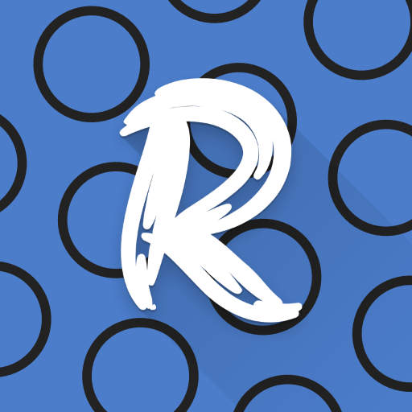
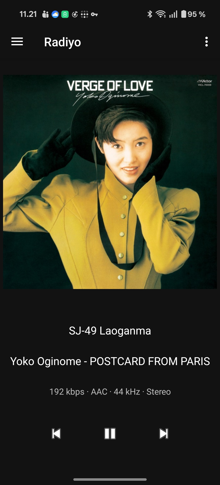
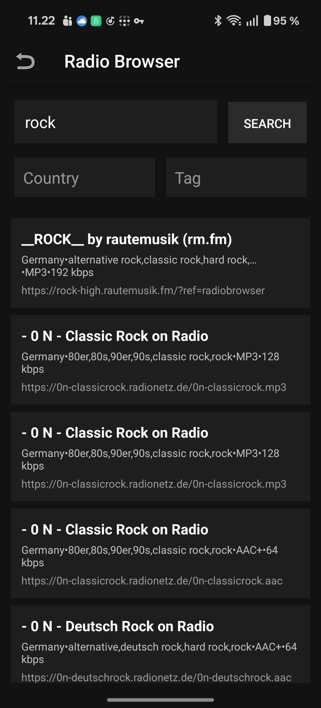

Station Browser
Search by name, country, or tag and add stations with one tap.

RadiyoRadiyo is a modern, yet simple Internet Radio Player
No ads, no tracking. Just your stations and your music.
Based on the current app build, these are the core features available today.
Search by name, country, or tag and add stations with one tap.
Already know your favorite station? Just add it in the app!
Don't want to keep the music playing forever? Just use the sleep timer.
Make music look the way you want it to be.
Track recently played song titles and stations.
Save and restore your station list when switching devices.
Adjust the sync of the visualizer to match your wired headphones.


Make the user interface your own.
Radiyo is a focused radio player with a station browser and a clean, uncluttered interface.